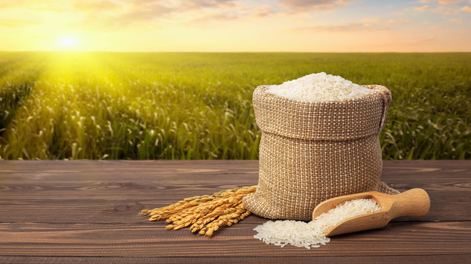
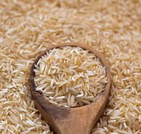
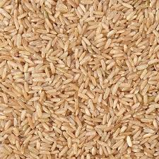
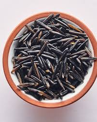

Rice

Basmati rice is known for its aromatic fragrance and its rate is :200rs/kg.

Brown rice is a whole grain that retains its bran and germ layers, making it rich in fiber. its rate is :230rs/kg
Japonica rice has short, round grains and is commonly used in sushi and sticky rice dishes.

Wild rice is a nutrient-dense grain high in protein, fiber, and antioxidants.